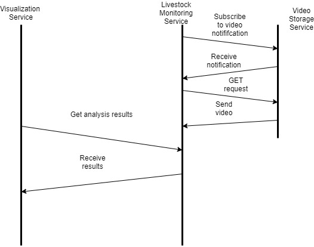

The "video_storage" ATLAS Service Template
Abstract
The purpose of this service template specifications document is to provide a technologyagnostic
overview of the video storage service template. It describes a well-defined baseline of the service by clearly identifying
the service version. The document describes the shared functional aspects of any service instance implementing
the media storage template, the operational and business context of such services, possible
requirements, relations to other services and validation aspects.
Intended audience
ATLAS software vendors, participants, who want to to provide an ATLAS livestock monitoring service instance, or who wish to consume ATLAS livestock monitoring service instances.
Functional overview
Services implementing the video storage service template will provide a way to list and
download recorded video data recordings.
Additionally, services are required to provide information about a recorded video on request.
- Exact time and date of recording.
- ID of the sensor (e.g. video camera)
- Type of recording (video or audio file)
Operational Context
The video storage service allows authenticated service consumers to access video recordings
via their id, to view all available recordings for a user, or to filter by sensor ID. It allows for
registration of a callback URL via API call. Doing so will have the video storage service send
a notification whenever a new video is available for download. Consumers can then
download the video per GET request, using the video ID they received as part of the
notification.

Service template API
This section provides an abstract overview of the service template API. The detailed
OpenAPI specifications can be found in the service registry.
Endpoints
list_videos
Inputs:
Outputs:
list of available videos with
- video ID
- sensor ID
- record timestamp
- file type
get_video
Inputs:
Outputs:
- sensor ID
- record timestamp
- file type
download_video
Inputs:
Outputs:
subscribe
Inputs:
- callback url
- sensor ID(s) (optional)
Outputs:
Notifications send to the callback URL are of the form:
- video ID
- sensor ID
- record timestamp
- file type
unsubscribe
Inputs:
Outputs:
list_subscriptions
Inputs:
Outputs:
lists all subscriptions with
- subscription id
- callback URL
Data model
The detailed data models, with examples can be found in the adjoining OpenAPI specifications.